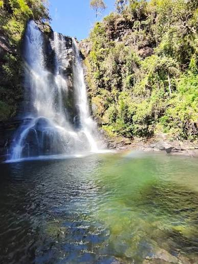

A Cachoeira da Conceição é um dos principais pontos turísticos da cidade, no estado do Piauí. Além de sua importância natural, o local é muito procurado por moradores e turistas por oferecer belas paisagens e um ambiente agradável para momentos de lazer.